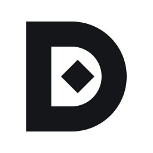
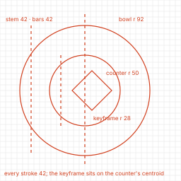
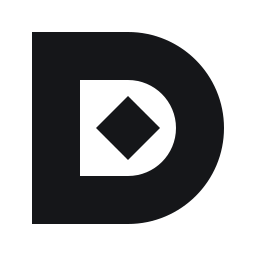
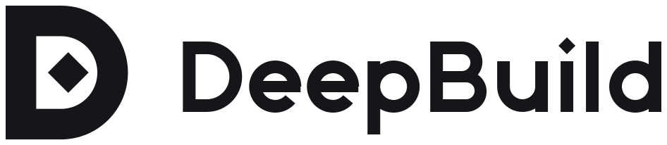
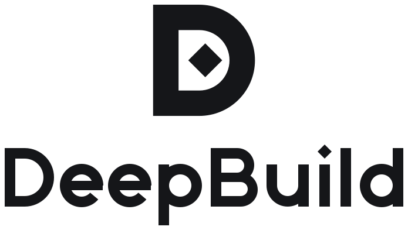

<title>DeepBuild Logo Kit</title>
<style>
:root{--ink:#151619;--paper:#F6F6F4;--white:#FFFFFF;--signal:#F2C440;--grey:#74767D;--bg:#ECECEA;--fg:#151619}
@media (prefers-color-scheme: dark){:root:not([data-theme="light"]){--bg:#0E0F11;--fg:#F6F6F4}}
:root[data-theme="dark"]{--bg:#0E0F11;--fg:#F6F6F4}
body{margin:0;background:var(--bg);color:var(--fg);font:14px/1.5 system-ui,-apple-system,"Segoe UI",sans-serif;padding-inline:16px}
main{max-width:1080px;margin:0 auto;padding-block:28px 48px;display:grid;gap:22px}
h1{font-size:22px;margin:0}h2{font-size:15px;margin:0 0 8px}p{margin:0;max-width:72ch}
.row{display:flex;flex-wrap:wrap;gap:12px;align-items:center}.c{border-radius:10px;display:flex;align-items:center;justify-content:center;gap:16px;padding:16px;min-width:0}
.p{background:var(--paper)}.k{background:var(--ink)}.w{background:var(--white)}
.sw{display:flex;gap:10px;flex-wrap:wrap}.sw div{width:120px;border-radius:8px;padding:10px;font:12px ui-monospace,Menlo,monospace}
img{max-width:100%}
</style>
<main>
<h1>DeepBuild · logo kit · Keyframe</h1>
<p>A D whose counter holds a keyframe: the motion editor's own symbol, the point where something is set exactly. Agents make 2D motion, figures, 3D scenes and films as data; the app checks them before you see them.</p>
<section><h2>The mark</h2><div class="row">
<div class="c p"></div><div class="c k"></div>
<div class="c w"></div><div class="c k"></div></div></section>
<section><h2>Small sizes: the small cut takes over at 24 px and below</h2><div class="row">
<div class="c p"></div>
<div class="c k"></div>
<div class="c p"></div></div></section>
<section><h2>Wordmark and lockups</h2><div class="row">
<div class="c p"></div><div class="c k"></div>
<div class="c p"></div><div class="c k"></div></div></section>
<section><h2>Colour</h2><div class="sw">
<div style="background:#151619;color:#F6F6F4">Ink<br>#151619</div><div style="background:#F6F6F4;color:#151619">Paper<br>#F6F6F4</div>
<div style="background:#FFFFFF;color:#151619">White<br>#FFFFFF</div><div style="background:#F2C440;color:#151619">Signal<br>#F2C440<br>on ink only</div>
<div style="background:#74767D;color:#FFFFFF">Grey<br>#74767D<br>text only</div></div></section>
<p style="color:var(--grey)">Status colours stay in the interface and never on the mark. No trademark search has been done; get a professional one before launch.</p>
</main>
